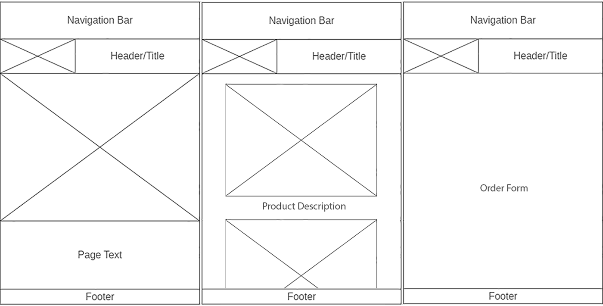
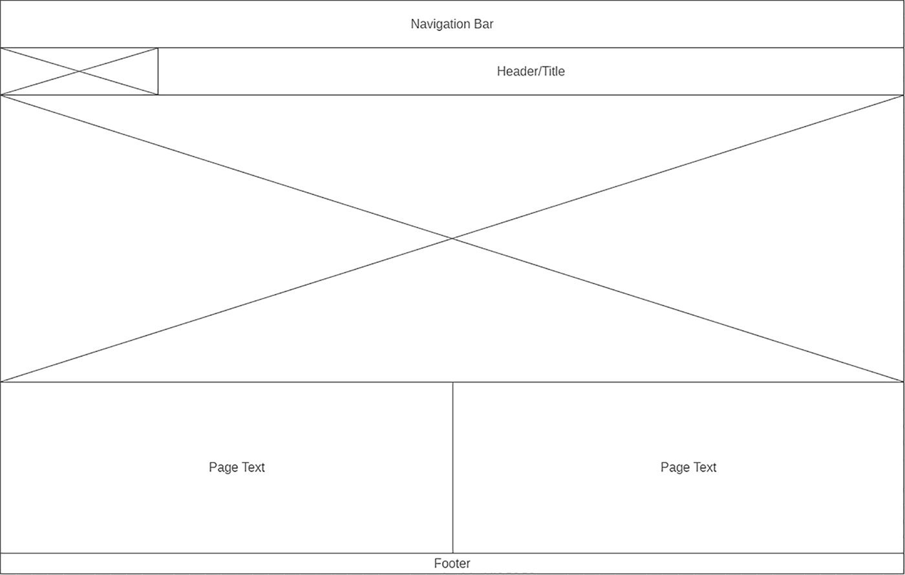

Design Report
To begin the design process, I started by creating a simplistic mobile sized wireframe for the slideshow page of my site which was originally going to be my homepage. I then began experimenting with different colours and fonts to see what they would look like when placed against other colours. After I had selected a palette which suited the website, I got to work implementing the initial, mobile friendly version of my website and it didn’t take me long to notice a few design aspects with needed to be altered.
Mobile Wireframes
Firstly, the logo colours needed changing for the sake of accessibility as it was barely noticeable against the background colour, and if someone with standard vision struggled to notice it against the background then it would be near impossible for the visually impaired. In order to help increase the accessibility of my website I therefor changed the colour of the logo to contrast its background and as a result, the logo stood out much more and was very easy to notice. This decision to change the logo colour eventually lead me to change the colour scheme for my website entirely which will be discussed later.
Secondly, the navigation bar looked very bland and under-designed to me and, since according to the research of Renee Garett, Jason Chiu, Ly Zhang and Sean D. Young, PhD (2017) “The seven website design elements most often discussed in relation to user engagement in the reviewed studies were navigation (62.86%), graphical representation (60%), organization (42.86%), content utility (37.14%), purpose (31.43%), simplicity (31.43%), and readability (31.43%)” (Section 4). It is critical that the navigation bar is well designed, engaging and accessible, because it is arguably the most important aspect of the website and in many cases the first place the user looks upon first viewing the site. Therefor I moved the logo from the header to the navigation bar and changed the layout of the bar so that the logo was on the left and the navigation links were on the right, this change, though simplistic, dramatically increased the quality of my website and would be much more appealing to the target audience.
Desktop Wireframe
Once I had made changes to and was happy with the mobile-friendly design of my website, I began work on a desktop version of the design where I encountered many layout problems which weren’t present on a smaller screen. For one, at desktop size, both the text and images on the screen were so wide stretched that the website was barely readable, and the general aesthetic of the site had been compromised. Since according to the W3C website, home to the official web standards, “The Web is about more than text and information, it is also a medium for expressing artistic creativity, data visualization, and optimizing the presentation of information for different audiences with different needs and expectations” (Graphics Section). I have changed my websites design for desktop screen sizes to make it much more visually appealing and to fix the aforementioned problem with the layout by adding margins to the content so that it can’t stretch too far and also by using a 50/50 layout for content rather than content stretching the entire width of the screen.
Finally, once I was happy with the layout for the larger desktop friendly design of my website and I had implemented all the relevant code, I decided to overhaul the colour scheme for my website as the level of contrast between the colours still wasn’t as appealing or as accessible as I’d hoped. In the end I decided to implement a white and purple colour scheme since these two colours greatly contrast each other, so much so that even running the website through a colour-blind filter yielded great results. Due to this I feel the colour scheme switch was justified from an accessibility perspective. I have also used the Roboto font for most of the text on my site because this font is considered web standard as it is easily readable and a nice-looking sans-serif font.
Early Pre-Recolour Design
In conclusion, the design process for my website went relatively smoothly overall but some major problems did arise the more time I spent implementing my designs. These problems were handled in a way that required a good amount of justification from the standpoint of accessibility and target audience to prevent overdesigning of the website. Due to this methodology for handling design problems, the final website design now looks both simple, professional and is highly accessible for all people regardless of platform or visual impairments.
References:
https://www.ncbi.nlm.nih.gov (2017) A Literature Review: Website Design and User Engagement
https://www.w3.org (2019) Web Design & Applications